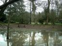

Tuesday, February the 27th, 2007
back to: title, date or indexes
Every so often I get a metal tapping machine message from an overexcited television person pleading with me to devise a game show based on some aspect of Hooting Yard. These people are invariably young and stupid, and I try hard not to be a git as I refuse their offers of ruinous wealth and a peaktime viewing audience of millions.
But I must admit that I was tempted by the latest whizzkid's “concept”, which was to turn The Names Of The Ponds into a thirteen-part series. The idea was that each week, a couple of contestants (Brian from Swanage and Carol from Jaywick) would stare at a photograph of a pond for fifteen minutes, then, after the advert break, use their skill, judgment, and cherished religious beliefs to work out which pond they'd been looking at. Stephen Fry would be on hand to help them, because he's so clever.
It's a quandary, but in the end I think I will have to get back to the teenage television person and say No, No, No. But that's no reason why you, my loyal readers, should be deprived of the wholesome family entertainment such a game provides. So here is a photograph of a crow-surrounded pond, courtesy of OSM. Which of the thirteen ponds do you think it is? No prizes, I'm afraid, save for a warm glow of Hooting Yard-type bliss.
